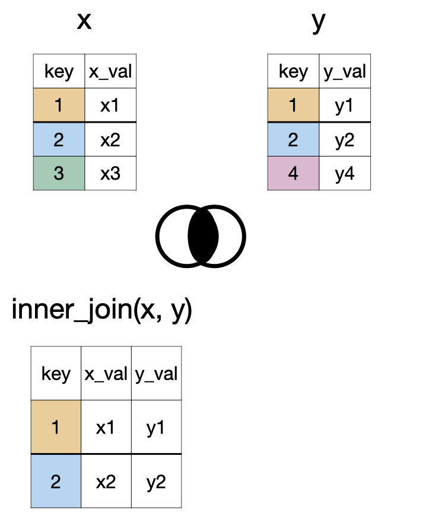
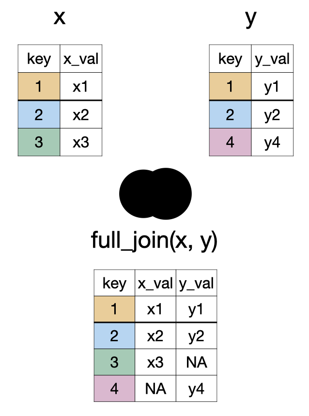
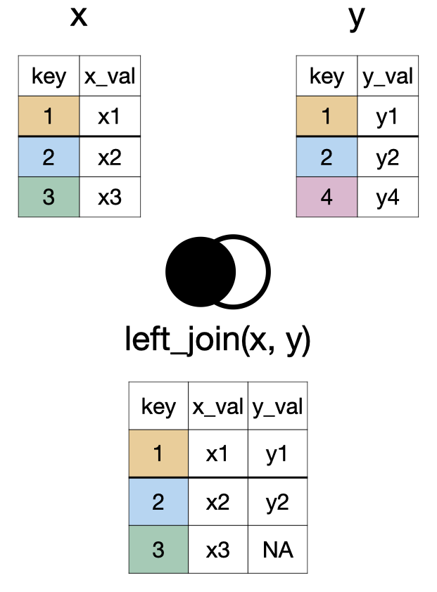
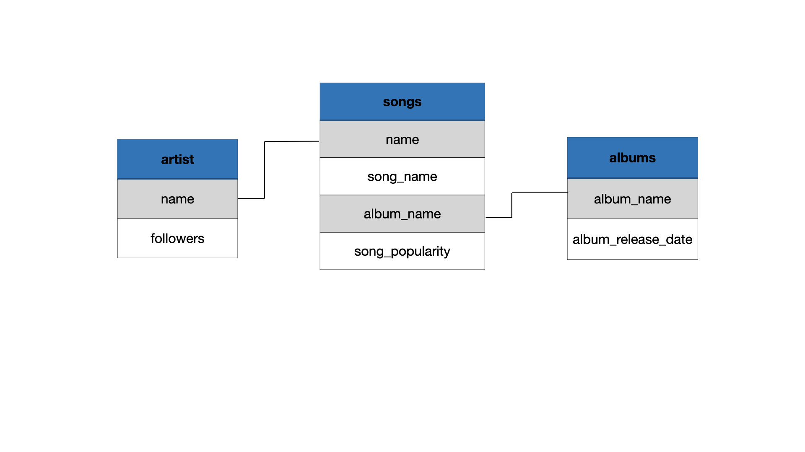

- 1
- We will use the stringr package for handling strings.
- 2
- We will use the lubridate package for handling dates.
- 3
- We will use the forcats package for handling factors. You can think of forcats as for cat egorical variable s or as an anagram of factors.
Data 200: Lecture 6
Special variable types & data joins
Medina - CSU Channel Islands
Slides derived with permission from 2026 Dr. Mine Dogucu CC BY-NC-ND 4.0.
Packages
Packages
All these packages are part of tidyverse
── Attaching core tidyverse packages ──────────────────────── tidyverse 2.0.0 ──
✔ dplyr 1.2.1 ✔ readr 2.2.0
✔ ggplot2 4.0.3 ✔ tibble 3.3.1
✔ purrr 1.2.2 ✔ tidyr 1.3.2
── Conflicts ────────────────────────────────────────── tidyverse_conflicts() ──
✖ dplyr::filter() masks stats::filter()
✖ dplyr::lag() masks stats::lag()
ℹ Use the conflicted package (<http://conflicted.r-lib.org/>) to force all conflicts to become errorsPackages
We will also use
So far we have been downloading packages from CRAN (Comprehensive R Archive Network). Packages on CRAN have to meet certain criteria, including size. Hence package authors who don’t meet this criteria host their packages elsewhere (e.g., GitHub).
Data
Rows: 369,089
Columns: 28
$ call_number <chr> "250160183", "250152276", "250120282", …
$ unit_id <chr> "T01", "T02", "E11", "T03", "T02", "E32…
$ incident_number <chr> "25008211", "25007952", "25006095", "25…
$ call_type <chr> "Alarms", "Alarms", "Alarms", "Elevator…
$ call_date <chr> "01/16/2025", "01/15/2025", "01/12/2025…
$ watch_date <chr> "01/15/2025", "01/15/2025", "01/11/2025…
$ received_dt_tm <chr> "2025 Jan 16 02:41:42 AM", "2025 Jan 15…
$ entry_dt_tm <chr> "2025 Jan 16 02:43:02 AM", "2025 Jan 15…
$ dispatch_dt_tm <chr> "2025 Jan 16 02:43:55 AM", "2025 Jan 15…
$ response_dt_tm <chr> "2025 Jan 16 02:46:32 AM", "2025 Jan 15…
$ on_scene_dt_tm <chr> NA, "2025 Jan 15 03:32:27 PM", "2025 Ja…
$ transport_dt_tm <chr> NA, NA, NA, NA, NA, NA, NA, NA, NA, NA,…
$ hospital_dt_tm <chr> NA, NA, NA, NA, NA, NA, NA, NA, NA, NA,…
$ call_final_disposition <chr> "Fire", "Fire", "Fire", "Fire", "Fire",…
$ available_dt_tm <chr> "2025 Jan 16 03:01:30 AM", "2025 Jan 15…
$ address <chr> "02ND ST/FOLSOM ST", "STOCKTON ST/WASHI…
$ city <int> 17, 17, 17, 17, 17, 17, 17, 17, 15, 17,…
$ zipcode_of_incident <dbl> 94107, 94108, 94110, 94109, 94108, 9413…
$ original_priority <int> 3, 3, 3, 3, 3, 3, 3, 3, 3, 3, 3, 3, NA,…
$ priority <int> 3, 3, 3, 3, 3, 3, 3, 3, 3, 3, 3, 3, 3, …
$ final_priority <int> 2, 2, 2, 2, 2, 2, 2, 2, 2, 2, 2, 2, 2, …
$ als_unit <lgl> FALSE, FALSE, TRUE, FALSE, FALSE, FALSE…
$ call_type_group <chr> "Alarm", "Alarm", "Alarm", "Alarm", "Al…
$ number_of_alarms <dbl> 1, 1, 1, 1, 1, 1, 1, 1, 1, 1, 1, 1, 1, …
$ unit_type <chr> "TRUCK", "TRUCK", "ENGINE", "TRUCK", "T…
$ unit_sequence_in_call_dispatch <dbl> 3, 2, 1, 1, 2, 3, 2, 1, 2, 1, 1, 1, 3, …
$ neighborhoods_boundaries <chr> "Financial District/South Beach", "Chin…
$ case_location <chr> "POINT (-122.396705177 37.785542131)", …Class expectations
You are not expected to memorize every function for manipulating strings, factors, and dates!
You are expected to:
- identify variable types and describe what you want to accomplish
- use available resources to find appropriate code
- check that the result is what you intended
Note
The goal is not to memorize a list of functions. The goal is to learn how to solve data-manipulation problems.
Strings
Replace a string
Replace a string
Replacing multiple strings
Replacing multiple strings
# A tibble: 369,089 × 1
address
<chr>
1 02ND ST/FOLSOM ST
2 STOCKTON ST/WASHINGTON ST
3 MISSION ST/POWERS AVE
4 OCTAVIA ST/SUTTER ST
5 SACRAMENTO ST/WAVERLY PL
6 CARRIE ST/WILDER ST
7 CLIFFORD TER/UPPER TER
8 18TH ST/HARTFORD ST
9 MERRIE WAY/POINT LOBOS AVE
10 LOMBARD ST/MASON ST
# ℹ 369,079 more rows# A tibble: 369,089 × 1
address_long
<chr>
1 02ND STREET/FOLSOM STREET
2 STREETOCKTON STREET/WASHINGTON STREET
3 MISSION STREET/POWERS AVENUE
4 OCTAVIA STREET/SUTTERRACE STREET
5 SACRAMENTO STREET/WAVENUERLY PLACE
6 CARRIE STREET/WILDER STREET
7 CLIFFORD TERRACE/UPPER TERRACE
8 18TH STREET/HARTFORD STREET
9 MERRIE WAY/POINT LOBOS AVENUE
10 LOMBARD STREET/MASON STREET
# ℹ 369,079 more rowsReplacing multiple strings with specific matches
# A tibble: 369,089 × 1
address_long
<chr>
1 02ND STREET/FOLSOM STREET
2 STOCKTON STREET/WASHINGTON STREET
3 MISSION STREET/POWERS AVENUE
4 OCTAVIA STREET/SUTTER STREET
5 SACRAMENTO STREET/WAVERLY PLACE
6 CARRIE STREET/WILDER STREET
7 CLIFFORD TERRACE/UPPER TERRACE
8 18TH STREET/HARTFORD STREET
9 MERRIE WAY/POINT LOBOS AVENUE
10 LOMBARD STREET/MASON STREET
# ℹ 369,079 more rowsChanging capitalization
# A tibble: 6 × 1
address
<chr>
1 02nd St/Folsom St
2 Stockton St/Washington St
3 Mission St/Powers Ave
4 Octavia St/Sutter St
5 Sacramento St/Waverly Pl
6 Carrie St/Wilder St We can also use str_to_upper() or str_to_lower() as needed
Gluing strings together
# A tibble: 3 × 1
description
<glue>
1 Incident 250160183 occurred in Financial District/South Beach
2 Incident 250152276 occurred in Chinatown
3 Incident 250120282 occurred in Bernal Heights Detecting a pattern
# A tibble: 10 × 2
call_type is_fire_related
<chr> <lgl>
1 Alarms FALSE
2 Alarms FALSE
3 Alarms FALSE
4 Elevator / Escalator Rescue FALSE
5 Alarms FALSE
6 Traffic Collision FALSE
7 Alarms FALSE
8 Vehicle Fire TRUE
9 Smoke Investigation (Outside) TRUE
10 HazMat FALSE Dates
ISO Date
While there are many ways to write a date for humans, there is only one universally accepted format for data as standardized by the International Organization for Standardization (ISO). It follows the order of YYYY-MM-DD (e.g., 1986-12-20).
Writing dates this way ensures they are sorted correctly by computers and avoids any international confusion between months and days.
UTC and time zones
- Coordinated Universal Time (UTC) is the international reference for time.
- UTC does not change for daylight saving time, making it useful for storing times and calculating differences.
- Camarillo uses Pacific Time:
- PST: UTC−8, from early November to mid-March
- PDT: UTC−7, from mid-March to early November
Understanding time zones helps to avoid incorrect times and calculations when data come from different locations or cross daylight saving time transitions.
Storing dates and times
Storing dates and times
# A tibble: 369,089 × 1
received_dt_tm
<dttm>
1 2025-01-16 02:41:42
2 2025-01-15 15:27:06
3 2025-01-12 02:19:44
4 2025-01-19 16:47:16
5 2025-01-17 21:13:08
6 2025-01-07 18:48:41
7 2025-01-16 08:19:39
8 2025-01-19 22:06:27
9 2025-01-07 15:48:36
10 2025-03-26 08:21:24
# ℹ 369,079 more rowsStoring dates and times
First check if your code works as expected
# A tibble: 3 × 1
received_dt_tm
<dttm>
1 2025-01-16 02:41:42
2 2025-01-15 15:27:06
3 2025-01-12 02:19:44The update your dataset
Storing dates and times with time zones
# A tibble: 3 × 1
received_dt_tm
<dttm>
1 2025-01-15 18:41:42
2 2025-01-15 07:27:06
3 2025-01-11 18:19:44OlsonNames() function lists different names of timezones.
hour, month and week day
# A tibble: 3 × 4
received_dt_tm hour_val month_val day_name
<dttm> <int> <ord> <ord>
1 2025-01-15 18:41:42 18 Jan Wed
2 2025-01-15 07:27:06 7 Jan Wed
3 2025-01-11 18:19:44 18 Jan Sat duration
# A tibble: 3 × 2
received_dt_tm goal_arrival_time
<dttm> <dttm>
1 2025-01-15 18:41:42 2025-01-15 18:49:42
2 2025-01-15 07:27:06 2025-01-15 07:35:06
3 2025-01-11 18:19:44 2025-01-11 18:27:44duration
[1] "2026-03-08 06:00:00 PDT"[1] "2026-03-08 05:00:00 PDT"Note
When performing math with dates, lubridate distinguishes between two ways of measuring time: durations and periods. This distinction is critical when your data spans a Daylight Saving Time (DST) transition.
- When you add duration of exactly 1 day using the
ddays()function, you are simply adding 86,400 seconds. - On the other end, the
days()function just adds one day to the calendar day without touching the time component.
difftime
today and now
Factors
as.factor()
Factor w/ 12 levels "AIRPORT","BLS",..: 12 12 5 12 12 5 5 5 11 5 ...levels() as seen in ggplot
![A horizontal bar chart titled by unit type, showing the count of various emergency service unit types. From bottom to top, the Y-axis lists unit categories including: AIRPORT, BLS, CHIEF, CP, ENGINE, INVESTIGATION, MEDIC, PRIVATE, RESCUE CAPTAIN, RESCUE SQUAD, SUPPORT, and TRUCK. The X-axis represents counts ranging from 0 to 90,000+ (in increments of 30,000). ENGINE appears to have the highest count, exceeding 90,000, while unit types such as AIRPORT, and INVESTIGATION appear to have the lowest counts, close to zero. The chart provides a comparative view of how frequently each unit type appears in the dataset.](lec-06-special-variables-and-joins_files/figure-revealjs/fig-unit-alpha-1.png)
Figure 1
fct_infreq()
levels() as seen in ggplot
![A horizontal bar chart showing the count of emergency service unit types, ordered from least to most frequent. The Y-axis lists unit types from lowest (on top) to highest frequency (in the bottom): AIRPORT, INVESTIGATION, RESCUE SQUAD, SUPPORT, BLS, RESCUE, CAPTAIN, CP, CHIEF, PRIVATE, TRUCK, MEDIC, and ENGINE. The X-axis represents counts from 0 to 90,000+ (in increments of 30,000). ENGINE has the highest count, exceeding 90,000, followed by MEDIC and TRUCK. AIRPORT and INVESTIGATION have the lowest counts, close to zero. This frequency-sorted view makes it easy to identify the most and least common unit types in the dataset.](lec-06-special-variables-and-joins_files/figure-revealjs/fig-unit-freq-1.png)
Figure 2
levels() as seen in ggplot with fct_rev()
![A horizontal bar chart showing the count of emergency service unit types, ordered from most frequent to least. The Y-axis lists unit types from lowest (in the bottom) to highest frequency (on top): AIRPORT, INVESTIGATION, RESCUE SQUAD, SUPPORT, BLS, RESCUE, CAPTAIN, CP, CHIEF, PRIVATE, TRUCK, MEDIC, and ENGINE. The X-axis represents counts from 0 to 90,000+ (in increments of 30,000). ENGINE has the highest count, exceeding 90,000, followed by MEDIC and TRUCK. AIRPORT and INVESTIGATION have the lowest counts, close to zero. This frequency-sorted view makes it easy to identify the most and least common unit types in the dataset with the most frequent bar on top.](lec-06-special-variables-and-joins_files/figure-revealjs/fig-unit-rev-1.png)
Figure 3
levels() as seen in ggplot with fct_lump_n()

Figure 4
fct_relevel()
# A tibble: 12 × 2
unit_type total_als_unit
<fct> <int>
1 ENGINE 89853
2 MEDIC 88065
3 TRUCK 2336
4 PRIVATE 0
5 CHIEF 0
6 CP 135
7 RESCUE CAPTAIN 9821
8 BLS 0
9 SUPPORT 5059
10 RESCUE SQUAD 0
11 INVESTIGATION 0
12 AIRPORT 0fct_relevel()
# A tibble: 12 × 2
unit_type total_als_unit
<fct> <int>
1 ENGINE 89853
2 TRUCK 2336
3 MEDIC 88065
4 PRIVATE 0
5 CHIEF 0
6 CP 135
7 RESCUE CAPTAIN 9821
8 BLS 0
9 SUPPORT 5059
10 RESCUE SQUAD 0
11 INVESTIGATION 0
12 AIRPORT 0fct_reorder()
Factor w/ 42 levels "Bayview Hunters Point",..: 6 4 2 13 4 7 3 3 27 24 ...
Factor w/ 42 levels "Nob Hill","Western Addition",..: 27 8 26 14 8 34 15 15 16 23 ...Your responsibility: Factors, strings, and dates
You do not need to recall the exact function from these slides immediately.
You do need to be able to:
Describe the problem, find a possible solution, and verify the result.
A problem-solving process
When you need to manipulate a variable:
Identify its type. Is it a string, factor, or date?
Describe the desired result. What should change? What should stay the same?
Find a possible function. Use documentation, a cheatsheet, a search engine, or generative AI.
Check the result. Did the code produce the values and variable type you expected?
Revise if needed. Read error messages and adjust your code or search terms.
Data Joins
Combining multiple datasets into a single dataset is a common occurrence.
- You need to be able to identify what you want for the resulting data set. Considerations:
- What column(s) should be used to match the two datasets?
- Do you want to keep all of the rows?
- Do you want to keel all of the columns,
inner_join(x, y)

full_join(x, y)

left_join(x, y)

Example join data
# A tibble: 5 × 4
name song_name album_name song_popularity
<chr> <chr> <chr> <dbl>
1 Beyoncé Savage Remix (feat. Beyoncé) Savage Rem… 83
2 Taylor Swift cardigan folklore 85
3 Drake Laugh Now Cry Later (feat. Lil Durk) Laugh Now … 95
4 Beyoncé Halo I AM…SASHA… NA
5 Ariana Grande Stuck with U (with Justin Bieber) Stuck with… NAExample join strategy

inner_join() example
# A tibble: 4 × 5
name song_name album_name song_popularity followers
<chr> <chr> <chr> <dbl> <dbl>
1 Beyoncé Savage Remix (feat. Beyonc… Savage Re… 83 24757958
2 Taylor Swift cardigan folklore 85 33098116
3 Beyoncé Halo I AM…SASH… NA 24757958
4 Ariana Grande Stuck with U (with Justin … Stuck wit… NA 51807131full_join() example
# A tibble: 5 × 5
name song_name album_name song_popularity followers
<chr> <chr> <chr> <dbl> <dbl>
1 Beyoncé Savage Remix (feat. Beyonc… Savage Re… 83 24757958
2 Taylor Swift cardigan folklore 85 33098116
3 Drake Laugh Now Cry Later (feat.… Laugh Now… 95 NA
4 Beyoncé Halo I AM…SASH… NA 24757958
5 Ariana Grande Stuck with U (with Justin … Stuck wit… NA 51807131left_join() example
# A tibble: 5 × 5
name song_name album_name song_popularity followers
<chr> <chr> <chr> <dbl> <dbl>
1 Beyoncé Savage Remix (feat. Beyonc… Savage Re… 83 24757958
2 Taylor Swift cardigan folklore 85 33098116
3 Drake Laugh Now Cry Later (feat.… Laugh Now… 95 NA
4 Beyoncé Halo I AM…SASH… NA 24757958
5 Ariana Grande Stuck with U (with Justin … Stuck wit… NA 51807131Multiple full_join()’s example
# A tibble: 5 × 5
name song_name album_name song_popularity followers
<chr> <chr> <chr> <dbl> <dbl>
1 Beyoncé Savage Remix (feat. Beyonc… Savage Re… 83 24757958
2 Taylor Swift cardigan folklore 85 33098116
3 Drake Laugh Now Cry Later (feat.… Laugh Now… 95 NA
4 Beyoncé Halo I AM…SASH… NA 24757958
5 Ariana Grande Stuck with U (with Justin … Stuck wit… NA 51807131# A tibble: 5 × 6
name song_name album_name song_popularity followers album_release_date
<chr> <chr> <chr> <dbl> <dbl> <date>
1 Beyoncé Savage R… Savage Re… 83 24757958 2020-04-29
2 Taylor Swift cardigan folklore 85 33098116 NA
3 Drake Laugh No… Laugh Now… 95 NA 2020-08-14
4 Beyoncé Halo I AM…SASH… NA 24757958 2008-11-14
5 Ariana Gran… Stuck wi… Stuck wit… NA 51807131 2020-05-08